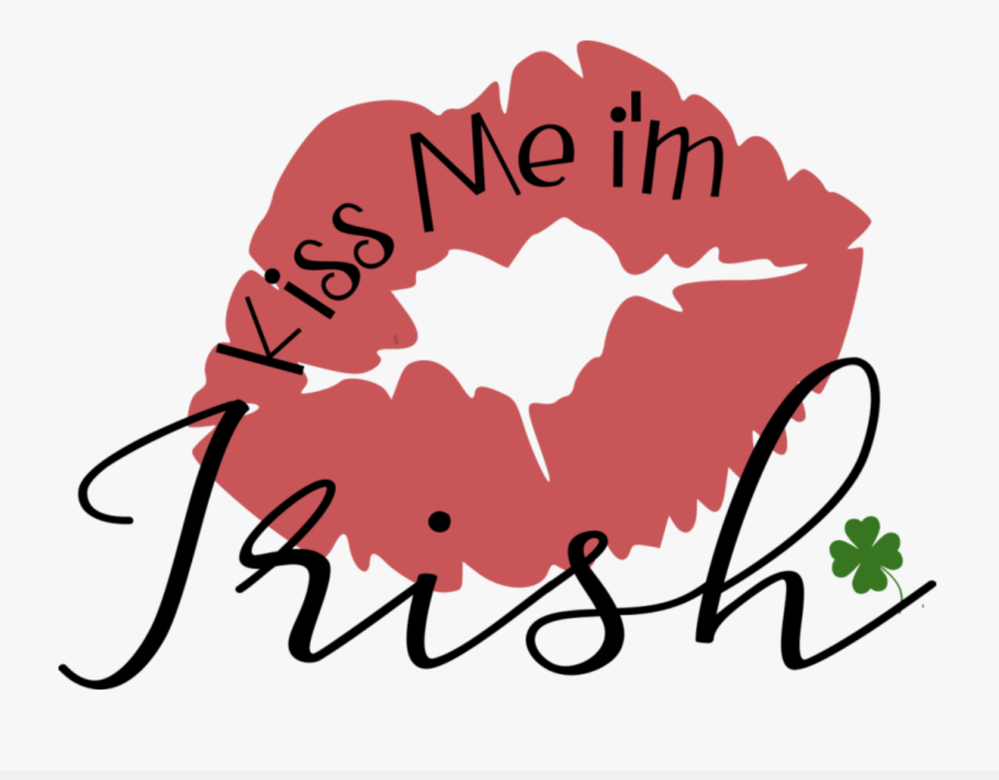

For over 200 years, world statesmen, literary giants, and legends of the silver screen have joined the millions of pilgrims climbing the steps to kiss the Blarney Stone and gain the gift of eloquence. Its powers are unquestioned but its story still creates debate.
BUT
In this world of air-carrying diseases and germ-filled hysteria, kissing the Blarney stone could be akin to smooching a petri dish full of unfanciful delights, with some 400,000 tourists kissing the stone every year, each of them leaving their own little traces of spit behind them.
